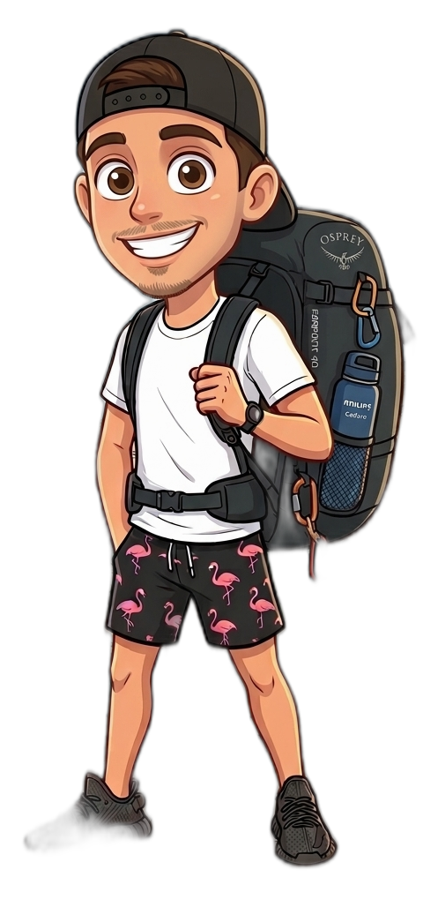
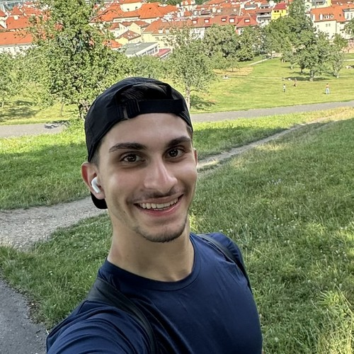
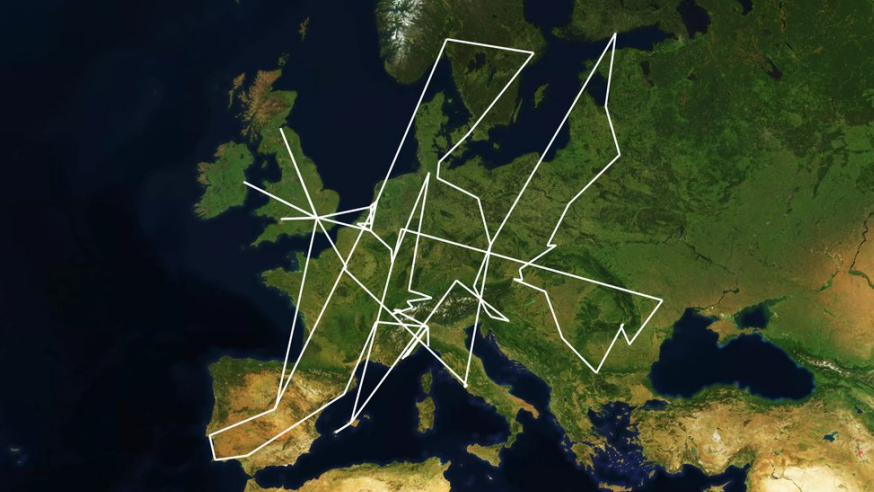

109 paradas, 108 trechos, sempre em frente.

47 histórias, cidade por cidade, do jeito que aconteceram. Da Holanda até a volta pra casa.
49 lugares, cada um com uma nota final. De Praga (10) a Metz (0) — sim, zero.
A régua original, categoria por categoria. Cada lugar recebia uma posição de 1 a 5 em cada uma; a nota final, porém, sempre foi decisão minha.
Como o roteiro foi montado, a burocracia do Espaço Schengen, o passe de trem e o controle do orçamento — a logística por trás dos 113 dias.
Tudo que eu responderia se você me chamasse pra tomar um café e perguntasse por onde começar.
Osprey Farpoint 40 e mais nada. Clique pra abrir cada organizador — e o que eu escrevi do lado de cada item é o que realmente aconteceu com ele na viagem.
Essa viagem não coube numa mochila sozinha. Um obrigado pra quem ajudou a fazer ela acontecer.
Mochigão.O personagem da viagem, fotos e vídeos de cada cidade já estão espalhados pelo site inteiro — nas histórias, no mapa e aqui em cima.
📷 Para ver mais mídias e relatos em tempo real, tem muito mais coisas no @mochigao_ →